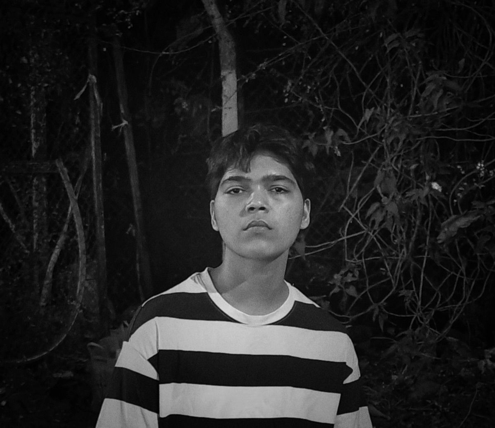

Chaitanya Jongra
About
I'm a 19-year-old founder from India, driven by a deep obsession with solving human problems — especially how people connect, interact, and discover meaning through technology. I started from nothing — no capital, no team, just vision, self-taught skills, and relentless execution.
Over the last year, I've built multiple experimental products to understand behavior, identity, and digital connection among Gen Z. From TeensForLife, a platform to help teenagers express and support one another, to PalConnect, a social compatibility engine based on shared interests and values, I've been iterating nonstop — learning what resonates, what doesn't, and what truly matters.
Now I'm building Aurame, a mobile-first AR experience that transforms how humans connect in the physical world — beginning with conferences, events, and networking spaces. It's not just about showing floating profile cards through AR — it's about breaking the invisible social barriers we all carry, and helping people connect with authenticity and speed in real life.
Aurame is a bold step toward what comes after social media — a new layer over reality itself. A tool that feels inevitable as AR matures, and one that's already being shaped, tested, and improved every day.
I believe in building from first principles. I believe in staying close to users. And I believe great products are built by people who are crazy enough to think they should be the ones to do it — and disciplined enough to prove it.
Currently
- Building Aurame - AR for human connection